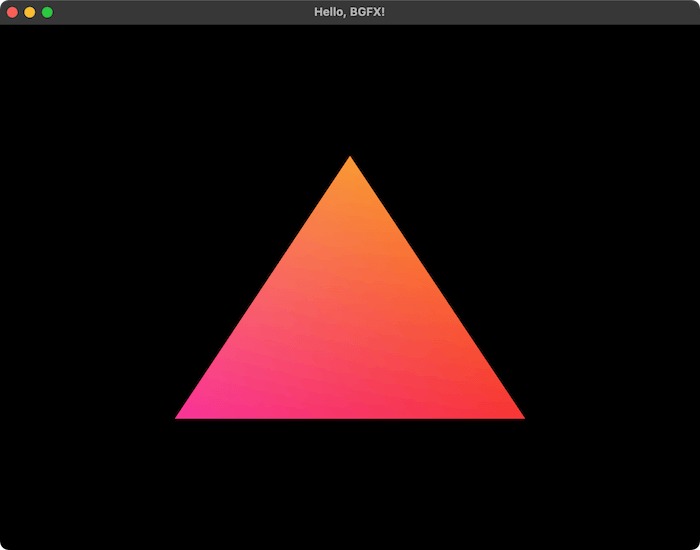

投稿日: 2025/01/05 17:36:32
カテゴリ: 描画エンジン
サムネイル: 
年末年始の休みを利用して、BGFXの研究に時間を割いていて、ある程度一区切りしたので、思考整理も兼ねてまとめておきたい。
ちなみになぜBGFXを研究していたかというと、もう5年前になるけれど、以下の記事を書いてから、どこかで低レベルグラフィックスAPIを使ってフルスクラッチで何かを書きたいという思いがあった。
最初はSokolを使って遊ぼうと思っていたのだけれど、最近、XiaomiのAndroid端末を買ったこともあって、Vulkanは切り捨てたくないなと思っていて、そこで重い腰を上げてBGFXを研究し始めた。
一つ前の記事で書いた通り、長期的にはProcessingやOpenFrameworksをMetal以降の新しいグラフィックスAPIに置き換えたいという思いもあった。
結論からいえば、BGFXはある程度OpenGLに歩み寄っている印象で、前の記事でも紹介したRGLやVulkan/Metal自体からすれば、OpenGLからの過渡期にちょうど良いAPI設計だと感じた。
例えばDescriptor (ディスクリプタ)を使わずに今まで通りUniformなどを使えるようにしてあったり、View (ビュー)という高次の描画概念（OpenGLのコンテキストみたいなもの）があることで、RenderPass (レンダーパス)を意識せずにコードを書くことができる。
もちろんこれはおそらく諸刃の剣でもあって、本当にミッションクリティカルな高性能な描画を行いたいなら、自分で直接Vulkan/Metal/DX12を書くべきだろうなと思う。
あと、コードを書き始める前から悩んでいたのが、シェーダやテクスチャを事前コンパイルしなければならないことと、その際のシェーダに独自のマクロが含まれることで、これも設計上の取捨選択かなと思う。
RavEngineなどのように、素のGLSLなどが書けたほうが望ましい場合もあるだろうし、テクスチャについても、pngやjpgなどを直接読み込んでくれて必要に応じてktxやddsなどにコンパイルしてくれるほうが良い場合もあるかと思う。
実際、多くのゲームエンジンがそうなっているし、BGFXでもやろうと思えば（シェーダマクロを除いては）利用するアプリケーション側でshadercなどを呼ぶことはできる1と思うけれど、BGFXはおそらく、C++から直接利用する場合の利便性を一番に考えてこの設計にしたのだと思う。
例えばBGFXのシェーダは、オプションを指定するとC/C++用のヘッダファイルを出力してくれる。これはソースコードに埋め込みたいときにとても便利だし、テクスチャも呼び出し前から事前コンパイルされていれば、オーバーヘッドは小さくなる。
さて、こうしてBGFX研究をして、何に繋げていくかというところなのだけれど、一番大きいと思ったのは、このBGFXを書くという行為自体の学習効果はとても大きいように思えた。
先程も紹介したように、OpenGLからその後のモダンAPIへの過渡期として、ちょうど良いAPI設計がされているので、Metal/Vulkan/DX12を直接書く前段階として、程よいステップになる。
そして一度書くとクロスプラットフォームで動くというのは魅力で、それがLWJGL3（Java用の描画ライブラリ）に含まれている理由だと思うのだけれど、ただ、メンテが不十分なのかユーザが少ないのか情報が少ないのか、Write Once, Run Anywhere、と一筋縄ではいかないのはちょっと残念なところ。
LWJGL自体、Javaの他のライブラリと違って、基本的にC++ライクに実装されているので、それが今回選んだ理由の一つ（oFはC++で書かれていて、ProcessingはJavaで書かれていて、良い塩梅なので）だったのだけれど、各プラットフォームで描画がちゃんとできているかを確認するのは大変なことだと感じた。
ただ、一度基盤が整えば、描画結果がほぼ（自分の観測上は今のところ完全に）Win/Mac/Linuxで一致するのは素晴らしいと思った。最近のゲームエンジンでは当たり前のことなのだけれど、その当たり前が一番難しいことだったりする。
じゃあ初めから、OpenGLと相性の良さそうなVulkanを選べば良いのではないか、と思うけれど、正直個人的にはOpenGLからVulkanへの飛躍はかなり大きくて、Vulkanは直接書くのはだいぶ辛いと感じるので、その点BGFXは良い緩衝材になってくれているように思う。（個人的にVulkanは、ゲームエンジンなどの基盤になるべきもので、直接書くものではない気がする。BGFXはその点、直接書くことをかなり意識されている。）
おそらくRGLが目指していることなのかなと思うけれど、MetalのAPIだったら個人的に書いてもいいかなと思うので、Metal-likeなAPIがそのままクロスプラットフォームになるというのは、RGLの魅力の一つかもしれない。
さて、この成果を何に活かしていくかについては、やっぱり最終的にはProcessingやOpenFrameworksの新しい描画基盤にしたいところだけど、前述の通り、素のGLSLが書けなかったりといろいろ過渡期な感じは否めないので、やるとしたらシェーダとテクスチャ周りは厚めにラップしてBGFXの存在を意識しないで良いようにするか、あるいは逆にBGFXを意識して書けるようにするかかな、と思う。
ただ正直、RGLやRavEngineのようなムーブメントがあることや、自分自身既にBevy EngineやGodot Engineなどで楽しくコーディングできていることを思うと、完全にライフワークの域かなとは思う。
ちなみにminimax (Clojure言語用の、BGFXを使った3Dゲームエンジン) のように、BGFXはJava等のほとんどの言語で既にバインディングがあることを利用した、面白い使い方はできそうで、これは5年前に記事を書いたときも思ったのだけれど、BGFXのようにゲームエンジンのベースになるフレームワークを覚えておいて、その名前などでゲームエンジンを検索すると、もし既存のもので好みのものがないときに、良い選択肢が見つかりやすいかもしれない。
個人的には、いまのOpenFrameworksやProcessingは、それはそれで一つの枯れたフレームワークを形成してくれててありがたいし、OpenGL自体も今後もMesaなどで変わらずメンテされていくと思っているので、よほど描画性能がミッションクリティカルな場合でなければ、無理にモダンAPIに寄せる必要はないように思うけれど、それでも今回手を動かしてみて、例えば並列処理で10倍、SIMDで10倍の性能差が出たら、掛け算して100倍以上の性能差が出る、というような、まるでPythonとMojoみたいなことが平気であり得るなという気はした。
そういう意味で、自分はたぶん今後は普段はBevyやGodot、RavEngineのようなもので何かを作ったり遊んだりしながらも、時々はこういうBGFX研究のような探求というか研究のようなものは続けていくんだろうなという気はする。
余談として、もしクロスプラットフォームで物を作る必要がないなら、MetalとSwiftを書いていくのが幸せそうだなという気がするし、逆にDX12とC#だけを書くのも幸せなように思う。そういう意味でUnityやGodotはちょうど良い戦略をとっていると思うし、一つ前の記事でも書いたけど、今後MoonBitのような言語がWeb/WASMの領域を広げていくのだろうと思う。
BevyやRust自体も、雑な言い方をすればWebGPU含めてFirefoxの副産物のようなものなので、何かしら安定したものを作ろうとすると自然とそういう巨人の肩の上に乗ることになるんだろうなと思いつつ、たまにはフルスクラッチに自由なものを書く楽しみも大切にしたいなと思う。